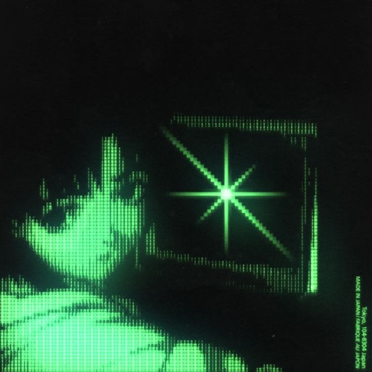
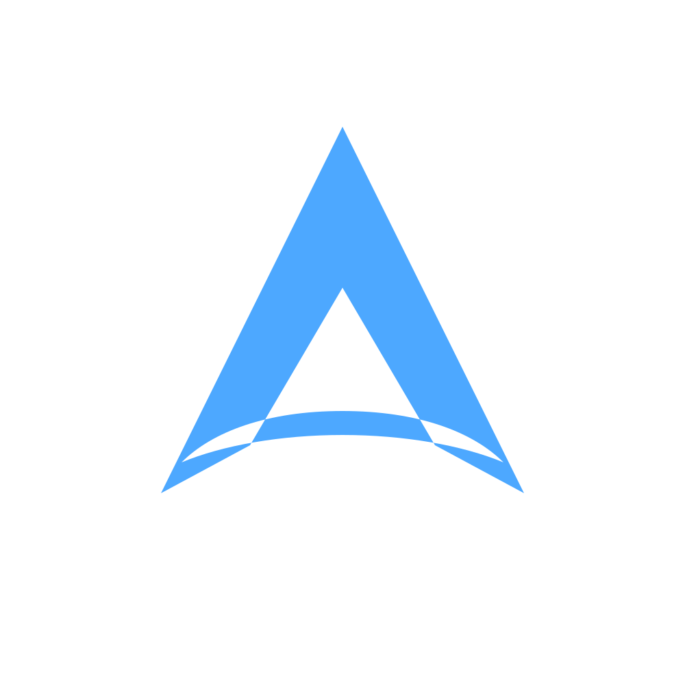

Umbra Browser
A browser I'm building from scratch. Fast, private, and mine.

Linux · browsers · TUI tools
Linux tinkerer. ThinkPad enthusiast. Building browsers and TUI stuff.
Hey, I'm wyind. I make stuff for Linux. Mostly browsers, TUI tools, and whatever else sounds fun at 2am.
My daily driver is a desktop PC running Ubuntu 26.04. My ThinkPad X13 Gen 2 is a different setup and stays on Fedora. There is also a T420 that's been sitting in a box with a broken screen for a while now. I'll fix it eventually, but who really cares :)
I'm really into Right to Repair. Things should be built to last, be fixable, and not need a subscription to exist. Same reason I love Casio watches and ThinkPads: honest, durable, repairable hardware. I thought about getting a Fairphone Gen 6 +, but I haven't committed yet.
Outside of video games and coding I like cat gifs quite a bit.
| Component | Configuration | Notes |
|---|---|---|
| Primary OS | Ubuntu 26.04.1 LTS | Desktop only |
| Laptop | ThinkPad X13 Gen 2 | Different setup, stays on Fedora |
| Hardware | i9-9900K · RTX 3080 · 48 GB + X13 + T420 | T420 screen needs replacing. It'll happen. |
| Philosophy | Right to Repair | ThinkPads, Casio watches, things built to last |
| Toolchain | C, Rust, Go, Python, Bash | TUI dev and systems tinkering |
| Workspace | kitty, nvim, custom TUIs | Keyboard-first, minimal |

Where my projects live. Browsers, tooling, and weird little things I build to understand how stuff works.
github.com/abysssoftware-dev ↗A browser I'm building from scratch. Fast, private, and mine.
Make ASCII art, avatars, and banners in your terminal.
A TUI text editor and IDE. Lives in the terminal.
Feel free to reach out regarding Linux tinkering, web browsers, or open-source software.